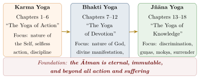
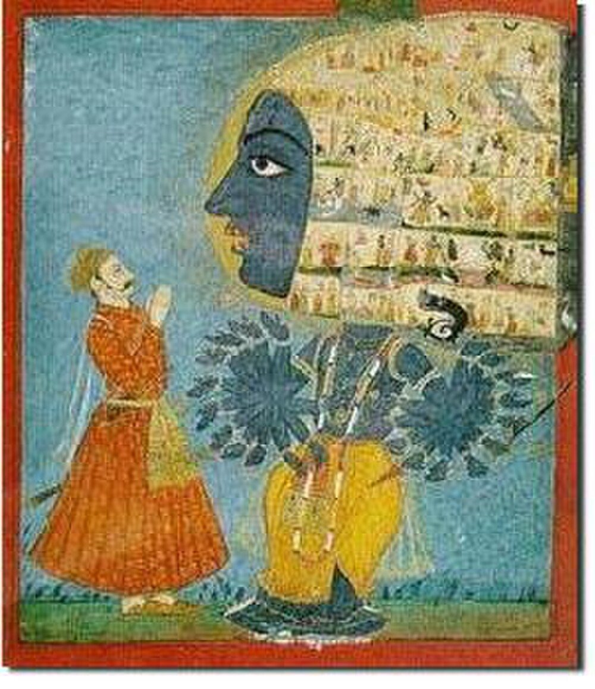
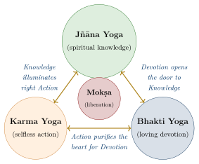
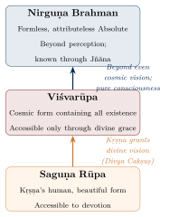

Chapter 6: The Bhagavad Gītā¶
sarvopaniṣado gāvo dogdhā gopālanandanaḥ /
pārtho vatsaḥ sudhīr bhoktā dugdhaṃ gītāmṛtaṃ mahat //
— Gītādhyāna 4 (traditional)
The Bhagavad Gītā — the “Song of the Lord” — is the best-known philosophical text of the Hindu tradition and has been translated more often than any other Sanskrit work. Comprising 700 ślokas in 18 chapters in the vulgate, it forms chapters 23–40 of the Bhīṣma Parva of the Mahābhārata in the Critical Edition (25–42 in the vulgate). It records the dialogue between Kṛṣṇa and the warrior Arjuna on the battlefield of Kurukṣetra, at the moment when the war is about to begin, as reported by Sañjaya to the blind king Dhṛtarāṣṭra (van Buitenen 1981; Malinar 2007).
A verse of the traditional meditation recited before the Gītā (Gītādhyāna) describes its relation to the Upaniṣads: “All the Upaniṣads are the cows; the milker is Kṛṣṇa, the cowherd’s son; Arjuna is the calf; the wise are the drinkers; the milk is the great nectar of the Gītā.”
6.1 Date and Composition¶
The Gītā is part of the Mahābhārata and cannot be dated independently of it. Most scholars place its composition between the second century BCE and the first century CE, though estimates range from the fifth century BCE to the second century CE (see Table 1.5). It presupposes the major Upaniṣads, early Sāṅkhya and Yoga, and the debates between ritualists and renouncers, and it shares vocabulary with early Buddhism (brahmanirvāṇa, 2.72). Whether it is a single composition has long been debated. From Richard Garbe onwards, some scholars have distinguished an older theistic Sāṅkhya–Yoga core from later Vedāntic and devotional additions (Garbe 1905); Franklin Edgerton defended its unity as a work that deliberately combines several religious approaches; and Angelika Malinar has read it as a carefully constructed argument, developed in stages, that responds to debates about kingship, violence and devotion to a supreme god within the epic itself (Edgerton 1944; Malinar 2007). The tradition, by contrast, regards it as the very words of Kṛṣṇa spoken on the battlefield.
6.2 Context: The Crisis on the Battlefield¶
As the two armies stand arrayed on the field of Kurukṣetra, Arjuna asks Kṛṣṇa, his charioteer, to drive his chariot between the two armies. Seeing his own grandfathers, teachers, uncles, brothers, sons, and friends on the opposing side, Arjuna is overwhelmed by grief and confusion. He puts down his bow, the legendary Gāṇḍīva, and declares that he will not fight.
Arjuna’s Despair — Gītā 1.47
Sanskrit:
sañjaya uvāca —
evam uktvārjunaḥ saṅkhye rathopastha upāviśat
visṛjya saśaraṃ cāpaṃ śokasaṃvignamānasaḥ
Translation:
“Having spoken thus on the battlefield, Arjuna cast aside his bow and arrows, and sat down on the seat of the chariot, his mind overwhelmed with grief.”
This crisis becomes the occasion for Kṛṣṇa’s teaching — a teaching that addresses not only Arjuna’s immediate dilemma (whether a warrior may kill his kin for a just cause) but also broader questions: the nature of the self, the meaning of action, the path to liberation, and the relationship between the individual and the supreme God.
6.3 Structure of the Bhagavad Gītā¶
A later traditional scheme, popularised by commentators such as Madhusūdana Sarasvatī (16th century), groups the eighteen chapters into three sections of six (ṣaṭkas), associated respectively with action, devotion and knowledge. The scheme is a convenient guide rather than a feature of the text, in which all three themes recur throughout (Figure 6.1):

6.4 The Course of the Argument¶
Each chapter of the Gītā carries, in the colophons of the manuscripts, a title naming it as a “yoga”; the titles are later than the text and vary slightly between editions. Table 6.1 gives them with the main content of each chapter. The argument itself does not move in straight lines, and the paragraphs below follow its main themes rather than the chapters one by one.
| Ch. | Traditional title | Main content |
|---|---|---|
| 1 | Arjunaviṣādayoga | Arjuna’s despondency at the sight of his kin |
| 2 | Sāṅkhyayoga | The immortal self; action without attachment; the person of steady wisdom |
| 3 | Karmayoga | Action is unavoidable; sacrifice; acting for the welfare of the world |
| 4 | Jñānakarmasaṃnyāsayoga | The teaching’s lineage; divine descent; inaction in action |
| 5 | Karmasaṃnyāsayoga | Renunciation as inner detachment |
| 6 | Ātmasaṃyamayoga | Meditation and the discipline of the mind |
| 7 | Jñānavijñānayoga | Kṛṣṇa’s lower and higher nature |
| 8 | Akṣarabrahmayoga | The imperishable; remembering Kṛṣṇa at death |
| 9 | Rājavidyārājaguhyayoga | The “royal secret”: devotion open to all |
| 10 | Vibhūtiyoga | Kṛṣṇa’s manifestations in the world |
| 11 | Viśvarūpadarśanayoga | The vision of the cosmic form |
| 12 | Bhaktiyoga | Worship of the manifest and the unmanifest; the devotee dear to Kṛṣṇa |
| 13 | Kṣetrakṣetrajñavibhāgayoga | The field (body and nature) and its knower |
| 14 | Guṇatrayavibhāgayoga | The three guṇas |
| 15 | Puruṣottamayoga | The cosmic fig tree; the supreme person |
| 16 | Daivāsurasampadvibhāgayoga | Divine and demonic dispositions |
| 17 | Śraddhātrayavibhāgayoga | Faith, food, sacrifice, austerity and gifts by the three guṇas; oṃ tat sat |
| 18 | Mokṣasaṃnyāsayoga | Renunciation; the duties of the varṇas; surrender |
6.4.1 Grief and the Self (Chapters 1–2)¶
Arjuna’s objections in the first chapter are themselves arguments from dharma: killing kinsmen destroys families, the destruction of families ruins their traditions and their women, and the “mixing of varṇas” that follows sends the ancestors to hell. Kṛṣṇa’s first answer is metaphysical. The self that Arjuna fears to kill cannot be killed:
The Immortal Ātman — Gītā 2.20
Sanskrit:
na jāyate mriyate vā kadācit
nāyaṃ bhūtvā bhavitā vā na bhūyaḥ
ajo nityaḥ śāśvato ’yaṃ purāṇo
na hanyate hanyamāne śarīre
Translation:
“The Ātman is never born, nor does it ever die. Having once existed, it does not cease to be. Unborn, eternal, changeless, and ancient, it is not slain when the body is slain.”
To this he adds an argument from Arjuna’s station — for a warrior nothing is better than a righteous war (2.31) — and an argument from honour. The second chapter then introduces the two ideas that the rest of the poem develops: action performed without attachment to its results, and the person of “steady wisdom” (sthitaprajña) who has achieved it (Section 6.8).
6.4.2 Action without Attachment (Chapters 3–6)¶
No one can remain without acting, Kṛṣṇa argues in the third chapter, and even the body cannot be maintained without action; the question is how to act without being bound (Section 6.12). Action offered as sacrifice, done because it ought to be done and without desire for its fruit, does not bind, and the wise act “for the holding together of the world” (lokasaṅgraha). In the fourth chapter Kṛṣṇa reveals that he taught this discipline long ago, and that he himself takes birth in age after age:
The Avatāra Declaration — Gītā 4.7–8
Sanskrit:
yadā yadā hi dharmasya glānir bhavati bhārata
abhyutthānam adharmasya tadātmānaṃ sṛjāmy aham
paritrāṇāya sādhūnāṃ vināśāya ca duṣkṛtām
dharma-saṃsthāpanārthāya sambhavāmi yuge yuge
Translation:
“Whenever Dharma declines and Adharma prevails, O Bhārata, I manifest Myself. For the protection of the righteous, the destruction of the wicked, and the establishment of Dharma, I appear in every age.”
The fifth chapter reconciles action and renunciation: true renunciation is inner detachment, not abstention from activity. The sixth describes the practice of meditation — the seat, the posture, the control of a mind that Arjuna finds as hard to restrain as the wind (6.34) — and assures Arjuna that no sincere effort is lost.
6.4.3 God and Devotion (Chapters 7–12)¶
The middle chapters turn from the self to God. Kṛṣṇa describes his lower nature, the material world, and his higher nature, the life within it; he is the taste in water, the light of sun and moon, the syllable Oṃ in the Vedas (7.8). Those who remember him at death go to him (chapter 8). The ninth chapter offers what it calls the royal secret, a devotion that requires no learning or wealth:
The Universal Offering — Gītā 9.26
Sanskrit:
patraṃ puṣpaṃ phalaṃ toyaṃ yo me bhaktyā prayacchati
tad ahaṃ bhakty-upahṛtam aśnāmi prayatātmanaḥ
Translation:
“Whoever offers Me a leaf, a flower, a fruit, or water with devotion — that offering of the pure-hearted, I accept.”
After listing his manifestations in the world (chapter 10), Kṛṣṇa grants Arjuna a divine eye and shows him his cosmic form (chapter 11; Section 6.11; Figure 6.2). In the twelfth chapter Arjuna asks whether those who worship Kṛṣṇa in manifest form or those who meditate on the unmanifest Imperishable are the better yogis; both reach him, Kṛṣṇa answers, but the path of the unmanifest is harder for embodied beings, and he describes the devotee who is dear to him (12.13–20).


6.4.4 Knowledge, the Guṇas and Surrender (Chapters 13–18)¶
The last six chapters return to analysis. The thirteenth distinguishes the “field” — body, mind and the whole of material nature — from its “knower,” the self. The fourteenth explains how the three guṇas of nature, sattva (clarity), rajas (passion) and tamas (inertia), bind the self, and chapters 16–18 classify faith, food, sacrifice, austerity, gifts, knowledge, action and happiness by the same three qualities (Table 6.2). Between them, the fifteenth chapter uses the image of the cosmic fig tree (aśvattha), with roots above and branches below, for the world from which the self must cut itself free, and names Kṛṣṇa the supreme person beyond both the perishable and the imperishable.
| Aspect | Sattva | Rajas | Tamas |
|---|---|---|---|
| Nature | Illumination, purity | Activity, passion | Inertia, darkness |
| Binds through | Attachment to happiness, knowledge | Attachment to action, desire | Negligence, sleep, indolence |
| Knowledge | Sees the One in all | Sees multiplicity | Clings to one partial view |
| Action | Duty without attachment | Driven by desire for results | Undertaken from delusion |
| Food | Fresh, wholesome, nourishing | Excessively spicy, sour, hot | Stale, impure, leftover |
| Charity | Given without expectation | Given with expectation of return | Given with contempt |
| Worship | Of the gods (devas) | Of Yakṣas and Rākṣasas | Of ghosts and spirits (17.4) |
| Destiny | Ascent (ūrdhva) | Middle regions | Descent (adho) |
The eighteenth chapter recapitulates: true renunciation is the renunciation of the fruits of action, the four varṇas have their duties by nature (18.41–48), and the poem closes with what many commentators regard as its final message:
The Supreme Message — Gītā 18.66
Sanskrit:
sarva-dharmān parityajya mām ekaṃ śaraṇaṃ vraja
ahaṃ tvā sarva-pāpebhyo mokṣayiṣyāmi mā śucaḥ
Translation:
“Abandoning all dharmas, take refuge in Me alone. I shall free you from all sins; do not grieve.”
What “abandoning all dharmas” means has been among the most debated questions in the commentaries: Śaṅkara takes it as the renunciation of all action in favour of knowledge, while Rāmānuja and the Śrīvaiṣṇava tradition read the verse as the charter of surrender (prapatti) to God. Arjuna, at any rate, declares his confusion gone and takes up his bow.
6.5 The Gītā and the Social Order¶
The Gītā’s teaching on action is framed by the social order of varṇa. Kṛṣṇa declares that he created the four varṇas “according to the division of qualities and actions” (guṇakarmavibhāgaśaḥ, 4.13), urges Arjuna that “one’s own duty (svadharma), even imperfectly done, is better than another’s duty well performed” (3.35, 18.47), and in Chapter 1 has Arjuna fear that war will cause the “mixing of varṇas” through the corruption of women. At the same time the Gītā opens the path of devotion to all: “even those of sinful birth, women, Vaiśyas and Śūdras” reach the highest goal by taking refuge in Kṛṣṇa (9.32).
These passages have been read in sharply different ways. Modern Hindu interpreters such as Gandhi and Radhakrishnan emphasised “qualities and actions” and argued that the Gītā grounds varṇa in aptitude rather than birth; the classical commentators, however, generally understood svadharma as the duty of one’s hereditary station. B. R. Ambedkar, in his unfinished essay “Krishna and His Gita,” read the text as a defence of the four-varṇa order (Ambedkar 1987), and the phrase “of sinful birth” in 9.32 shows the hierarchical assumptions within which its universalism operates. A balanced reading recognises both the text’s offer of liberation through devotion to all, and its affirmation of a social order that most modern readers reject (Davis 2015; Minor 1986).
6.6 The Three Yogas: Ranked or Integrated?¶
Modern readers often take the Gītā to teach three paths — action (karma), devotion (bhakti) and knowledge (jñāna) — and to combine them in a single discipline, in which each person, according to temperament (svabhāva), emphasises one path while practising the others (Figure 6.3). This synthesising reading became widespread through modern interpreters from Vivekananda and Aurobindo onwards, and it has a basis in the text’s habit of moving between the three themes. It is, however, one interpretation among several. The classical commentators ranked the paths. Śaṅkara held that knowledge alone liberates, and that action purifies the mind only as a preparation for it; Rāmānuja made devotion, culminating in surrender, the supreme means, with knowledge and action as its auxiliaries; and Tilak argued in the twentieth century that the Gītā’s real teaching is energetic action, which knowledge and devotion serve (Section 6.13). The text itself speaks in 3.3 of two disciplines, knowledge for the Sāṅkhyas and action for the yogins, and in 13.24 of meditation, Sāṅkhya and action; it nowhere sets out three paths as a scheme, and the division of its chapters into three hexads is likewise later (Figure 6.1) (Sharma 1986; Malinar 2007).

6.7 Commentarial Traditions¶
The Bhagavad Gītā has attracted more commentaries than any other Sanskrit text. Because the Vedānta schools counted it among their three foundational texts (prasthānatraya), with the Upaniṣads and the Brahmasūtra, each school’s founder or leading teacher wrote on it, interpreting it through the lens of his own philosophy. The commentaries reveal not a single “correct” reading but a spectrum of perspectives (Sharma 1986). Table 6.3 lists the principal classical commentaries; the modern interpretations of Tilak, Aurobindo and Gandhi are discussed in Section 6.13.
| Commentator | School | Period | Key Emphasis |
|---|---|---|---|
| Śaṅkara | Advaita Vedānta | c. 8th c. CE | Earliest surviving commentary; knowledge of the non-dual Self as the means of liberation; action as preparatory |
| Abhinavagupta | Kashmir Śaivism | late 10th–early 11th c. | Gītārthasaṅgraha, a Śaiva non-dual reading of the Kashmir recension |
| Rāmānuja | Viśiṣṭādvaita | 11th–12th c. | Devotion (bhakti) and surrender as the supreme means; God both transcendent and immanent |
| Madhva | Dvaita | 13th c. | Eternal distinction between God and souls; devotion to Viṣṇu |
| Jñāneśvara (Jñānadeva) | Vārkarī sant tradition | 1290 | Jñāneśvarī, a Marathi verse commentary that made the Gītā accessible to non-Sanskrit audiences |
| Śrīdhara Svāmin | Advaita with devotion | c. 14th c. | Subodhinī, widely read |
| Madhusūdana Sarasvatī | Advaita with devotion | 16th c. | Gūḍhārthadīpikā; reconciles knowledge and devotion |
6.8 Key Philosophical Concepts of the Gītā¶
The Bhagavad Gītā introduces and develops several foundational philosophical concepts that have shaped Indian thought for over two millennia.
6.8.1 The Concept of Sthitaprajña (One of Steady Wisdom)¶
Among the Gītā’s most influential passages is its portrait of the sthitaprajña, the person of steady wisdom. Arjuna asks (2.54) what the marks of such a person are: how does he speak, sit and walk? Kṛṣṇa’s answer (2.55–72) became a classic portrait of the liberated person, much loved by Gandhi, who had these verses recited daily at his ashram prayers (Table 6.4).
The Sthitaprajña — Gītā 2.55
prajahāti yadā kāmān sarvān pārtha manogatān /
ātmany evātmanā tuṣṭaḥ sthitaprajñas tadocyate //
Translation:
“When a person abandons all desires that enter the mind, Pārtha, and is content in the self by the self alone, then he is said to be of steady wisdom.”
| Quality | Description from the Gītā |
|---|---|
| Freedom from desire | When all desires of the heart are abandoned, the self finds satisfaction in the Self alone (2.55) |
| Equanimity | Undisturbed by sorrow, free from longing for pleasure, beyond attachment, fear and anger (2.56) |
| Non-attachment | Neither welcoming good fortune nor resenting bad (2.57) |
| Withdrawal of senses | Like a tortoise withdrawing its limbs, he withdraws the senses from their objects (2.58) |
| Inner stability | Like the ocean, which remains unmoved though rivers constantly flow into it (2.70) |
Gītā 2.70 — The Ocean Metaphor
āpūryamāṇam acalapratiṣṭhaṃ samudram āpaḥ praviśanti yadvat /
tadvat kāmā yaṃ praviśanti sarve sa śāntim āpnoti na kāmakāmī //
Translation:
“As waters enter the ocean, which is ever being filled yet stays unmoved in its place, so the one whom all desires enter attains peace — not the one who desires desires.”
6.8.2 The Concept of Yoga in the Gītā¶
The Gītā uses the term yoga in a broad sense. While the word literally means “union” or “yoking,” the Gītā employs it to mean any disciplined path that leads to spiritual realisation. Each chapter is called a “Yoga” — indicating that every teaching, from action to devotion to knowledge, is a complete path of spiritual discipline.
Kṛṣṇa’s Definition of Yoga — Gītā 2.48
Sanskrit:
yogasthaḥ kuru karmāṇi saṅgaṃ tyaktvā dhanañjaya
siddhy-asiddhyoḥ samo bhūtvā samatvaṃ yoga ucyate
Translation:
“Established in Yoga, perform actions, O Dhanañjaya, abandoning attachment, remaining the same in success and failure. This evenness of mind is called Yoga.”
6.8.3 The Doctrine of Avatāra (Divine Descent)¶
The Gītā’s teaching (4.7–8) that Kṛṣṇa takes birth “in age after age” whenever dharma declines became the charter of the doctrine of divine descent. The Gītā does not itself use the noun avatāra, which becomes standard in the Purāṇas, where lists of ten or more descents of Viṣṇu develop (Chapter 7). The idea of recurring descent distinguishes this theology from those, such as Christianity, that speak of a single incarnation.
6.9 The Gītā’s Influence on World Thought¶
The Bhagavad Gītā is the most widely translated text of the Indian tradition. Its global career began with Charles Wilkins’s English translation of 1785, and its modern prominence owes much to colonial-era translators, Indian nationalists and Western seekers alike (Davis 2015). See Table 6.5.
| Thinker / Movement | Period | Key Engagement with the Gītā |
|---|---|---|
| Charles Wilkins | 1785 | First English translation; opened the Gītā to the Western world |
| August Wilhelm Schlegel | 1823 | Edition with Latin translation; important for German Indology |
| Ralph Waldo Emerson | 1840s | Praised it in his journals; shaped American Transcendentalism |
| Henry David Thoreau | 1854 | In Walden: “In the morning I bathe my intellect in the stupendous and cosmogonal philosophy of the Bhagvat Geeta” |
| T. S. Eliot | 1941 | Allusion to Kṛṣṇa and Arjuna in “The Dry Salvages” (Four Quartets) |
| J. Robert Oppenheimer | 1965 | Recalled in a television interview that Gītā 11.32 (“Now I am become Death, the destroyer of worlds”) came to his mind at the 1945 Trinity test |
| Aldous Huxley | 1944–45 | Introduction to the Prabhavananda–Isherwood translation; The Perennial Philosophy |
| Christopher Isherwood | 1944 | Translation with Swami Prabhavananda |
6.10 The Gītā and Other Gītās in the Mahābhārata¶
The Bhagavad Gītā is not the only “Gītā.” The Śānti Parva itself contains several short “songs” (the Piṅgalā, Bodhya, Hārīta, Vṛtra and Haṃsa Gītās), and later Purāṇas and independent works imitated the form (Table 6.6):
| Gītā | Source | Speaker | Primary Teaching |
|---|---|---|---|
| Bhagavad Gītā | Bhīṣma Parva | Kṛṣṇa | Karma, Bhakti, Jñāna; integral liberation |
| Anu Gītā | Aśvamedhika Parva | Kṛṣṇa | Yoga, meditation, Brahman knowledge |
| Uddhava Gītā | Bhāgavatam 11 | Kṛṣṇa | Final teachings before departure; renunciation |
| Īśvara Gītā | Kūrma Purāṇa | Śiva | Knowledge of the self and yoga; Śiva as supreme Brahman |
| Devī Gītā | Devī Bhāgavata | Devī | Śākta philosophy; feminine divine |
| Gaṇeśa Gītā | Gaṇeśa Purāṇa | Gaṇeśa | Gaṇeśa as supreme reality |
| Avadhūta Gītā | Independent | Dattātreya | Radical Advaita; formless realisation |
| Aṣṭāvakra Gītā | Independent | Aṣṭāvakra | Pure non-dual consciousness |
6.11 The Viśvarūpa Darśana: Analysis of the Cosmic Vision¶
In chapter 11 Arjuna, granted a “divine eye,” sees the whole universe within the body of God: all beings and worlds, creation and destruction at once, and the warriors of both armies rushing into Kṛṣṇa’s flaming mouths. Theologians have drawn several lessons from the vision (Figure 6.4). It presents the supreme reality as a personal being of terrifying power and beauty rather than an abstract principle. Arjuna sees the other gods — Brahmā, Śiva, the Ādityas, the Rudras — within Kṛṣṇa’s form, which readers took as a statement of the unity of the divine. Kṛṣṇa identifies himself with time as the destroyer of worlds (11.32). And Arjuna, unable to bear the vision, begs him to return to his familiar human form, a confession of the limits of human understanding.
Kṛṣṇa as Time — Gītā 11.32
Sanskrit:
kālo ’smi lokakṣayakṛt pravṛddho lokān samāhartum iha pravṛttaḥ /
ṛte ’pi tvā na bhaviṣyanti sarve ye ’vasthitāḥ pratyanīkeṣu yodhāḥ //
Translation:
“I am Time, grown mature, the destroyer of worlds, engaged here in annihilating the worlds. Even without you, all these warriors arrayed in the opposing ranks shall cease to be.”

6.12 The Gītā’s Theory of Action: Karma Yoga in Detail¶
The Gītā’s treatment of action is often considered its most important philosophical contribution. Chapter 3 establishes that action is inescapable — even the maintenance of the body requires it (3.8). The Vedic ritualists held that ritual action brings its rewards; the renouncers held that all action binds and must be abandoned for liberation. The Gītā proposes a third way: action performed as duty, offered to God, without attachment to its fruits, does not bind.
Later commentators systematised this teaching with the terms sakāma karma (action driven by desire for results) and niṣkāma karma (action without such desire); the Gītā itself speaks of action (karman), wrong action (vikarman) and non-action (akarman), and says that the wise see non-action in action (4.17–18). See Table 6.7.
| Type | Sanskrit Term | Characteristics and Outcome |
|---|---|---|
| Desire-driven Action | Sakāma Karma | Performed for personal gain; binds the soul to the cycle of Saṃsāra |
| Selfless Action | Niṣkāma Karma | Performed as duty without attachment to results; purifies the mind and leads to liberation |
| Inaction in Action | Akarma | The enlightened state where the wise perceive non-action even in the midst of action (4.18) |
| Prohibited Action | Vikarma | Action contrary to Dharma; produces negative karmic consequences |
Kṛṣṇa’s teaching that “your right is to action alone, never to its fruits” (karmaṇy evādhikāras te mā phaleṣu kadācana, 2.47) is the most frequently quoted line of the Gītā. It does not counsel indifference to outcomes so much as freedom from the anxiety and bondage that attachment to results creates.
Lokasaṅgraha: Action for the Welfare of the World
In Chapter 3, Kṛṣṇa introduces the concept of lokasaṅgraha — action for the holding together of the world (3.20, 3.25). He himself, though he has nothing to gain in the three worlds, continues to act, because if he ceased to act people would follow his example and the world would fall into confusion (3.22–24). The concept turns the discipline of action into a social ethic, and modern interpreters from Tilak onwards made it central to their readings.
6.13 The Gītā in the Indian Freedom Movement¶
The Bhagavad Gītā played a large part in India’s struggle for independence, serving as a source of moral strength and philosophical justification for leaders across the political spectrum. B. G. Tilak’s Gītā Rahasya (1915) interpreted the Gītā as a call to selfless action in the service of the nation, arguing that Kṛṣṇa’s message was not one of world-renunciation but of active engagement. Revolutionary nationalists in Bengal and Maharashtra also drew on the Gītā, sometimes to justify political violence.
Gandhi, who first read the Gītā in Edwin Arnold’s English translation as a law student in London, made it the centre of his daily religious practice. His interpretation emphasised non-attachment (anāsakti) and read the battle of Kurukṣetra as an allegory of the inner struggle between good and evil — a reading that allowed him to derive non-violence from a text set on a battlefield. Aurobindo’s Essays on the Gita, serialised in his journal Arya between 1916 and 1920, presented a synthetic reading integrating action, knowledge and devotion into a philosophy of spiritual evolution. Gandhi set out his own reading in Anāsaktiyoga (written 1929, published 1930) and called the Gītā his “mother.” Vinoba Bhave’s Talks on the Gita, given in prison in 1932, drew from it a practical ethic of simplicity and service, and S. Radhakrishnan’s translation and commentary (1948) presented it as a work of universal philosophical significance (Minor 1986; Davis 2015).
6.13.1 The Gītā and Comparative Philosophy¶
The Bhagavad Gītā’s content invites comparison with other philosophical traditions. Its treatment of duty has been compared with Kant’s ethics, though it grounds duty not in abstract reason but in the nature of the self and its relation to God and to the social order. Its psychology of desire and attachment parallels Buddhist analysis while offering a theistic framework that Buddhism rejects. Its counsel to act without attachment to results has been compared to Stoic philosophy, particularly Epictetus and Marcus Aurelius. Such comparisons are modern analogies, useful for readers but not evidence of historical influence.